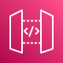

Osceola Phase 2 — Production Flow
Sequence view · 1 microfilm roll through the system · Bedrock Haiku 4.5 on us-west-2 · ~$490 one-time · ~1 hr end-to-end at 500 concurrent Lambdas
Legend
happy-path
low-conf → HITL
async · streams · metrics
retry · retrigger
Time flows top → bottom · steps numbered in order
Phase A — Bulk processing (1 execution per roll)
Phase B — Aggregate + output
Phase C — HITL review + audit
Amazon S3
S3 Input
EventBridge
roll-ready rule
Step Functions
orchestrator
AWS Lambda
classify_page
Amazon Bedrock
Haiku 4.5 + Sonnet 4.6
DynamoDB
state store
AWS Lambda
aggregate_roll
Amazon S3
S3 Output (PDFs)
Amazon SQS
hitl-queue

CloudFront · Cognito · API GW · Lambda
HITL review SPA
CloudWatch · Firehose · Athena
observability + audit